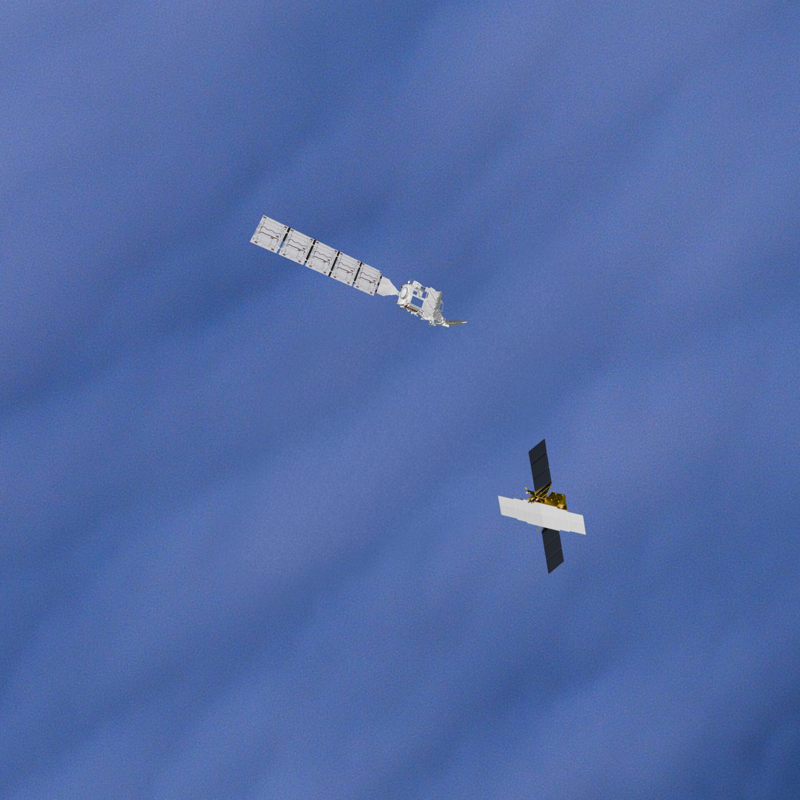
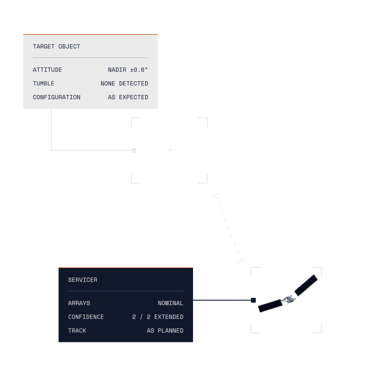
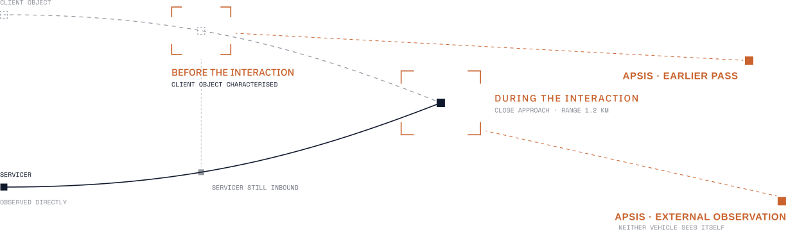
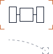
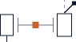
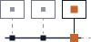
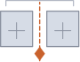
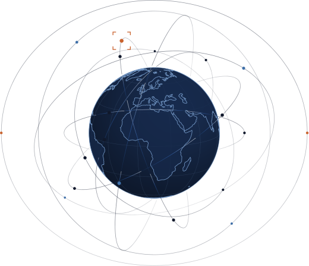

In-Orbit Operations
Conduct dynamic space operations with confidence
Inspect space objects before, during and after dynamic space missions, from pre-mission verification to rendezvous, servicing and proximity operations.


Progress measured in orbit

1,200+
1 mission = a dataset with the target in at least one frame


Know before you go

Apsis connects available space-based sensors with tasking, processing and analysis to deliver observations of objects in orbit. Customers can access inspection data without having to build the entire sensing and analysis infrastructure themselves.
Inspection across the mission lifecycle.

Verify before approach
Establish an independent view of the target. Characterise visible structures, assess configuration and identify features relevant to the mission.

Resolve unknowns
Inspect visible components and investigate features that require further understanding before closer operations.

Observe as the mission unfolds
Collect observations at key stages. Assess visible changes in orientation, configuration or physical state.

Verify the outcome
Compare observations before and after an operation. Build an independent record of visible changes following servicing, deployment or other mission events.
Inspection, without building a dedicated inspection system.

Apsis connects available space-based sensors with tasking, processing and analysis to deliver observations of objects in orbit. Customers can access inspection data without having to build the entire sensing and analysis infrastructure themselves.
why apsis
Independent verification
An observation source beyond onboard systems and ground-based tracking.
Real-time mission context
See spacecraft state during dynamic operations, as it changes.
Proven proximity imaging
Built on operational experience imaging spacecraft in close orbital encounters.
Flexible tasking
Apsis's distributed sensor network adapts to mission-specific observation needs.

How a National Space Agency Used Non-Earth Imaging to Support Space Situational Awareness
After a recent rideshare launch deployed dozens of satellites in close succession, a number of them remained unidentified a month later, raising concerns about operational status, potential collisions and liability. To address this, a national space agency partnered with Apsis to deploy non-Earth imaging (NEI) technology for enhanced space situational awareness and satellite identification.